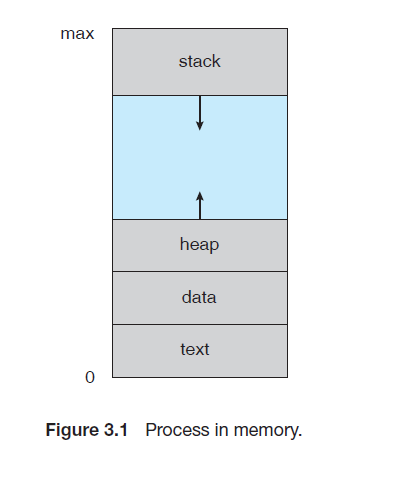
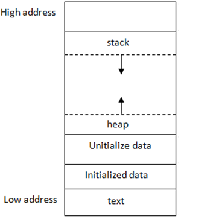
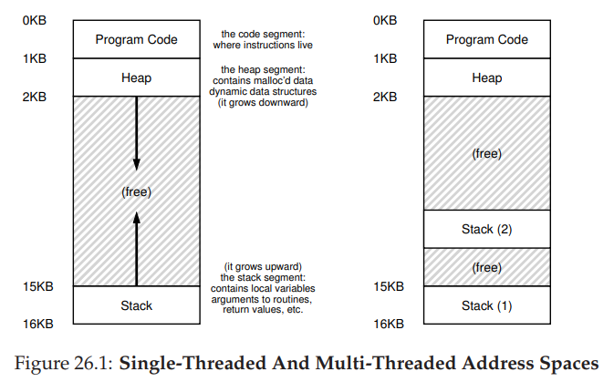
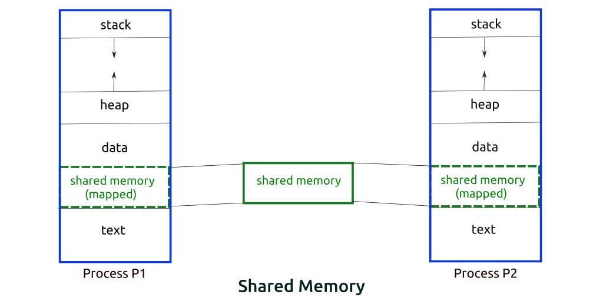
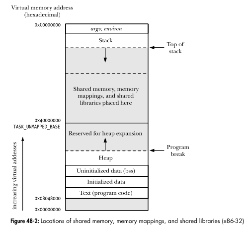

[OS] 프로세스 주소공간 알아보기
프로세스 주소공간이란?
프로세스 주소공간은 보통 스택, 힙, 데이터, 텍스트 네 개의 세그먼트로 이뤄진 형태로 일컬어집니다.
즉, 아래와 같은 형태로 묘사됩니다.

출처: Operating System Concepts 9th

스택(Stack):지역 변수들을 저장합니다.- 함수 호출과 같은 프로그램 활동에 의해 런타임에 가변 위치에 저장되는
자동 저장 기한을 갖는 객체저장 기한(Store Duration): c언어에서 객체의 수명을 결정하는 개념으로,정적(static)/자동(auto)/할당(allocated)3개의 저장 기한이 존재합니다.
- 함수 호출과 같은 프로그램 활동에 의해 런타임에 가변 위치에 저장되는
힙(heap): 프로그래머가 할당할 수 있는 동적 메모리 영역입니다.- 프로그래밍 언어에서 제공되는
메모리 할당자(memory allocator)에 의해 런타임에 가변 위치에 저장되는동적 저장 기한을 갖는 객체
- 프로그래밍 언어에서 제공되는
데이터(data): 초기화된, 초기화되지 않은전역 변수들을 저장합니다.정적 저장 기한을 갖는 객체
텍스트(text): 실행중인 코드들을 저장합니다.컴파일 된 프로그램데이터,텍스트모두컴파일러, 링커, 로더에 의해 결정된 고정된 위치에 저장됩니다.
메모리의 각 바이트는 “주소"에 할당되며, 그림에 나온 것처럼 텍스트에서 스택으로 올라갈수록 높은 주소번호를 갖게 됩니다.
스택
함수 인자, 저장된 레지스터, 반환 주소, 지역 변수 및 함수가 실행될 때 할당된 임시 값들을 저장합니다.
함수가 호출될 때 마다 컴퓨터는 함수를 위해 스택 메모리를 할당하며, 새로운 지역 변수가 선언되면 함수에 해당 변수를 저장하기 위해 더 많은 스택 메모리를 할당합니다. 이는 스택을 위에서 아래로 증가시킵니다.
C에서 함수 매개변수들은 함수 인자로부터 초기화된 지역 변수로 취급됩니다.
처음 몇 개의 함수들의 인자나 함수 반환 값은 가능한 레지스터에 저장하고, 그렇지 않다면 스택에 저장하게 됩니다.
스택은 main()을 호출하는 시스템 제공 시작 함수에 의해 초기화됩니다.
스택 세그먼트의 크기는 다른 세그먼트와 충돌하거나 시스템이 정한 제한을 초과할 때까지 늘어날 수 있습니다.
주의점
함수의 스택 메모리는 함수가 반환된 뒤 할당 해제되므로, 해당 영역에 저장된 값이 계속 유지된다는 보장이 없습니다.
따라서 만약 헬퍼 함수에서 스택 변수에 대한 포인터를 반환할 경우, 헬퍼 함수를 호출한 호출자가 이 포인터를 가져온 뒤 언제든 잘못된 스택 메모리를 덮어 쓸 수 있게 됩니다. 또한 해당 포인터가 객체를 가리키는 경우, 해당 객체의 변수값에 접근하거나 함수를 호출할 경우 프로그램의 충돌을 유발할 수 있습니다.
힙
C에서 malloc()을 통해 생성하거나, C++에서 new 키워드를 통해 생성한 객체와 같이, 동적으로 할당된 객체들을 저장합니다.
스택과 달리, 힙 메모리는 개발자가 명시적으로 할당하며, 명시적으로 해제할 때 까지 할당 해제되지 않습니다.
- 즉, 앞서 스택 메모리의 주의점인 포인터 반환 문제를 해결할 수 있습니다.
- 다만, 명시적으로 해제하지 않으면 프로그램이 종료된 후에도 힙 메모리가 해제되지 않기 때문에
메모리 누수를 일으킬 수 있습니다.
힙 메모리를 할당 해제하기 위해서는 delete 키워드를 힙 메모리의 포인터와 함께 사용하면 됩니다.
- 만약 할당 해제한 메모리의 포인터를 사용하려고 하면 정의되지 않은 동작이 발생할 수 있으므로 할당 해제 이후 포인터 값을
nullptr로 설정하는 것이 좋습니다.
힙 세그먼트의 크기는 다른 세그먼트와 충돌할 때 까지 커질 수 있습니다.
- 여기서 설명하는
힙은 정렬된 형태를 갖는 자료 구조인힙과는 다른 개념입니다.
힙 메모리는 유효하지 않은 메모리가 항상 맨 아래에 있는 스택과 달리, 사용자가 유효한 메모리 사이사이에 있는 힙 메모리를 해제해 힙의 단편화를 유발할 수 있습니다.
- 따라서 메모리를 효율적으로 재사용하기 위해, 최적의 위치를 찾는 여러 힙 할당 방식이 존재합니다.
데이터
전역 변수, 정적 지역 변수 및 다양한 상수들을 저장합니다.
객체의 위치는 변경되지 않으며, 프로그램 명령과 관련된 데이터는 컴파일 시 데이터 세그먼트에 할당되거나, 런타임에 스택 또는 힙 세그먼트에 할당될 수 있습니다.
로더는 실행 가능한 객체 파일을 읽고, 메인 메모리에서의 데이터 시작 위치를 결정합니다.
일반적으로 별도의 읽기-쓰기 및 읽기-전용 데이터 섹션이 제공됩니다.
명시적 초기화(ex. 전역변수 int n = 17)의 경우, 객체 파일에 명시적 정보(적어도 주소, 크기, 값)가 필요합니다.
암시적 초기화(ex. 전역변수 int n;)의 경우, 객체 파일에 주소, 크기 외의 명시적 정보가 필요하지 않습니다. 로더는 bss(block started by symbol) 섹션이라고도 부르는 이 섹션에 대해 알고 있어야 합니다.
텍스트
기계어로 된 프로그램 명령어를 저장합니다.
프로그램 명령어들은 실행 가능한 객체 파일로부터 읽어와, 컴파일러/링커/로더에 의해 결정된 고정 주소에 배치됩니다.
컴파일러는 상대 주소를 사용하는 명령어 모음을 포함하는 재배치 가능한 객체 파일(relocatable object file, .o 파일)을 생성합니다.
- 여기서 상대 주소는 각 함수 또는 데이터 객체의 시작 위치를 기준으로 합니다.
재배치 가능한 객체 파일은실행 가능한 객체 파일보다 적은 정보를 갖습니다.
링커는 여러 개의 상대 주소 모음을 수정해 하나의 상대 주소 모음(전체 프로그램의 시작 위치를 기준으로 하는)으로 만든 뒤 이를 라이브러리 객체 파일 또는 실행 가능한 객체 파일의 형태로 저장합니다.
라이브러리 객체 파일역시실행 가능한 객체 파일보다 적은 정보를 갖고 있습니다. (예를 들어,main()이 없다던지)
운영체제의 로더는 실행 가능한 객체 파일을 읽고 프로그램의 시작 지점이 메인 메모리 어디에 위치할 지 결정합니다.
로드 후에는 텍스트 세그먼트를 읽기-전용으로 마킹해 프로그램 스스로의 명령어들을 수정할 수 없도록 해야합니다.
초기화 하지 않은 변수들은 어디에 저장되는가?
초기화되지 않은 변수들은 전역(global) 또는 정적(static) 변수인지 지역 변수인지에 따라 다른 위치에 저장됩니다.
만약 전역/정적 변수인 경우, bss 섹션에 저장됩니다.
지역 변수인 경우, 해당 변수를 사용하는 함수의 스택 메모리에 저장됩니다.
Stack과 Heap의 크기와, 그 크기가 결정되는 시점
스택과 힙 모두 디폴트 크기 값이 존재하며, 이는 운영체제와 컴파일러에 따라 다를 수 있습니다.
스택의 경우, 윈도우에서는 1MB, 리눅스에서는 8MB가 기본 크기입니다.
이 크기는 리눅스/유닉스에서는 ulimit 커맨드로, 윈도우에서는 링커 옵션을 수정하거나 alloca 함수를 사용해 늘릴 수 있고, 부족하다면 운영체제가 자동으로 확장할 수 있습니다. #
힙의 경우, 1MB 또는 더 작은 크기를 기본 크기값부터 시작해, 동적 메모리 할당시 크기가 점점 증가한다고 알려져있습니다.
그리고 힙의 크기는 물리적 리소스 또는 가용한 가상 메모리 주소 공간에 의해 제한됩니다.
즉, 이론적으로 32비트의 경우 2~3GB까지 제한되며, 64비트의 경우 거의 제한이 없다(16엑사바이트까지)고 할 수 있습니다.
하지만 실제 프로그램이 실행되는 OS환경, 컴파일러 등에 의해 이러한 제한은 달라질 수 있습니다.
Stack과 Heap 중, 접근 속도가 더 빠른 공간은?
스택이 더 빠르다고 할 수 있습니다.
스택의 경우 그 액세스 패턴으로 인해 메모리 할당 및 해제가 간단합니다.
하지만 힙의 경우 할당 및 해제에 있어 복잡한 과정이 필요하기 때문에 느립니다.
또한 컴파일러가 코드를 컴파일 할 때, 어디에 스택 변수가 있는지 알 수 있으며 다른 스레드에서 접근할 수 없기 때문에 변하지 않을 것임을 가정할 수 있습니다.
반면 힙은 프로그램 실행 흐름에 따라 동적으로 할당되므로 어디에 변수가 존재하는지 알 수 없어 최적화를 하기 힘듭니다.
또한 스택의 각 바이트들은 재사용되는 경향을 띄어, 프로세서의 캐시에 매핑되는편이기 때문에 이 경우 스택의 접근 속도가 더 빨라집니다.
- Why stack is faster than heap and what exactly is stack? - Fortran Discourse (fortran-lang.discourse.group)
- + 이를 뒷받침 하는 벤치마크 Stack allocation vs heap allocation – performance benchmark | publicwork (wordpress.com)
공간을 분할하는 이유?
위처럼 4개의 세그먼트로 공간이 분할된 이유는 메모리의 활용도를 극대화하기 위해서입니다.
스택은 밑으로, 힙은 위로 충돌하지 않을때까지 공간을 늘려나가기 때문에 할당받은 프로세스의 메모리 공간을 최대한 활용할 수 있게 됩니다.
따라서 위와 같은 구조를 갖게 되었습니다.
스레드의 주소공간은 어떻게 구성되어 있을까?

스레드 역시 프로세스처럼 본인만의 주소공간을 갖고 있지만, 위 그림처럼 각 스레드 별로 독립되는 공간은
Stack 영역밖에 없으며 나머지 공간은 다른 스레드와 함께 공유하는 형태로 구성되어 있습니다.따라서 Stack 이외의 공간의 자원은 여러 스레드에서 접근할 수 있게 되고, 이로인한 동시성 문제가 발생할 수 있습니다.
“스택"영역과 “힙"영역은 자료구조의 스택/힙과 연관이 있는 걸까?
힙의 경우 앞서 얘기한 것 처럼, 자료구조의 “힙"과 상관이 없습니다.
하지만 스택의 경우, 자료구조의 “스택"과 유사하게 함수 호출 순서에 따라 아래로 스택 프레임을 추가해나가며 각 함수별로 인수 및 지역 변수들을 저장해나가게 됩니다.
IPC의 Shared Memory 기법은 프로세스 주소공간의 어디에 들어가는가? 그런 이유는?
IPC에서 사용하는 Shared Memory는 이를 공유하는 각 프로세스의 data 세그먼트에 attach 되어 접근하게 됩니다.

UNIX/Linux 환경에서는 커널이 할당해놓은, 프로세스들과 독립적인 공간에 대한 포인터를 각 프로세스에게 할당한다고 알려져있습니다.
즉, 한 프로세스가 공유 메모리 공간을 생성하게 되면, 독립적인 공간에서 공유 메모리 세그먼트를 생성하고 얻은 포인터를 다른 프로세스와 공유하게 되는 것입니다.

스택과 힙영역의 크기는 언제 결정되는가? 프로그램 개발자가 아닌, 사용자가 이 공간의 크기를 수정할 수 있는가?
리눅스 환경의 경우 사용자는 ulimit -s 값 명령어를 통해 실행 환경에서 스택 크기의 제한치를 변경할 수 있고, ulimit -v 값 명령어를 통해 힙의 최대 크기를 결정하는 가상 메모리 크기 제한을 변경할 수 있습니다.